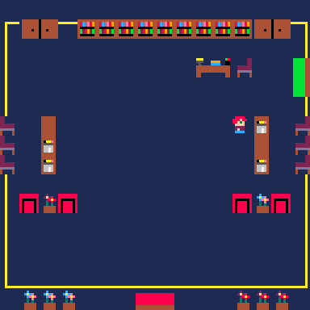

Programming Experience and Research
Experience
Game Developer/Designer
- Create the original game "Zenithia Castle" by coding in the programming language Lua and using the software Pico-8.
- Design unique characters, maps and sprites.
- Compose music and create sound effects.

Teaching Assistant for Introductory Design and Programming for the Web
Department of Information Science at Cornell University
- Lead a lab section; explain to students the lab assignments; resolve issues with lab assignments.
- Hold office hours for students who have additional questions or require help on assignments.
- Grade students' assignments and provide feedback for further improvement.
- Attend meetings in which the professor and the teaching assistants discuss the content for the lectures and labs.
Dealer Portal/Web Development Intern
Canon U.S.A., Inc.
- Implemented a content submission form with client-side validation for the Digital Marketing Services Department’s website.
- Worked closely with a UX/UI Intern to design and test the form.
- Used VBScript to transfer and format the data from a submitted form to an email.
Computer-Mediated Communication Research
Department of Information Science/Communication at Cornell University
- Investigated the motivations behind live stream participants who post comments during live streams.
- Collected data by interviewing participants with live stream experience via SONA and recording and transcribing their responses.
- Analyzed data by aggregating most common responses and finding correlations between streamers' actions and viewers' engagement.
Programming Languages
- Java
- Python
- C++
- C#
- MATLAB
- HTML
- CSS
- JavaScript
- Lua
- OCaml
Relevant Coursework
- Introductory Design and Programming for the Web
- Introduction to Computing Using Python
- Introduction to MATLAB
- Object-Oriented Programming and Data Structures
- Data Structures and Functional Programming
- Discrete Structures
- Systems Programming
- Foundations of Artificial Intelligence
- Natural Language Processing
- Crowdsourcing & Human Computation
- Inside Technology
- Networks
- Communication and Technology
- Information Ethics, Law, and Policy
- Computer-Mediated Communication
- Designing Technologies for Social Impact